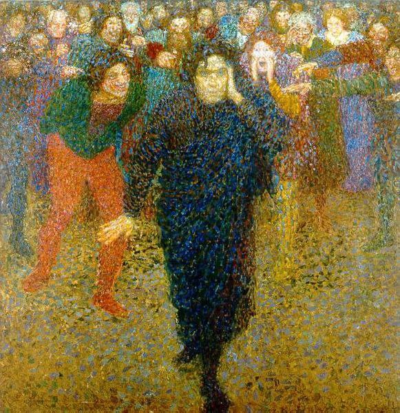

|  | The genius of the crowd |
There is enough treachery, hatred, violence, Absurdity in the average human being To supply any given army on any given day. AND The Best At Murder Are Those Who Preach Against It. And The Best At Hate Are Those Who Preach LOVE AND THE BEST AT WAR --FINALLY--ARE THOSE WHO PREACH PEACE Those Who Preach GOD NEED God Those Who Preach PEACE Do Not Have Peace. THOSE WHO PREACH LOVE DO NOT HAVE LOVE BEWARE THE PREACHERS Beware The Knowers. Beware Those Who Are ALWAYS READING BOOKS |
Beware Those Who Either Detest Poverty Or Are Proud Of It BEWARE Those Quick To Praise For They Need PRAISE In Return BEWARE Those Who Are Quick To Censure: They Are Afraid Of What They Do Not Know Beware Those Who Seek Constant Crowds; They Are Nothing Alone Beware The Average Man The Average Woman BEWARE Their Love Their Love Is Average, Seeks Average But There Is Genius In Their Hatred There Is Enough Genius In Their Hatred To Kill You, To Kill Anybody. |
Not Wanting Solitude Not Being Able To Love Fully
Not Understanding Solitude They Will BELIEVE Your Love
They Will Attempt To Destroy Incomplete
Anything AND THEN THEY WILL HATE
That Differs YOU
From Their Own
And Their Hatred Will Be Perfect
Not Being Able Like A Shining Diamond
To Create Art Like A Knife
They Will Not Like A Mountain
Understand Art LIKE A TIGER
LIKE Hemlock
They Will Consider Their Failure
As Creators Their Finest
Only As A Failure Art
Of The World
Opacity
visibility
goddamntit
shiiiit